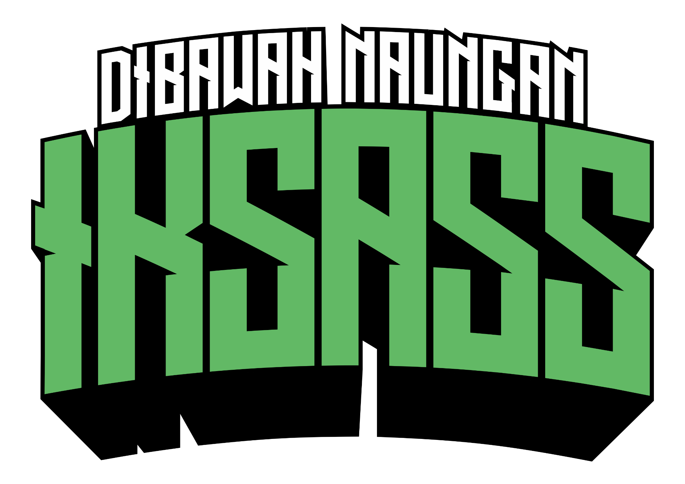

Peran Website
Website ini menjadi ruang penjelas yang menegaskan posisi IKSASS dalam menghadirkan arah, identitas, dan komunikasi digital yang tetap berpijak pada khidmah organisasi.
Di bawah Naungan IKSASS

Website ini merupakan platform digital yang dikelola Di bawah Naungan IKSASS sebagai bagian dari support system resmi di dunia maya yang memayungi pembinaan, komunikasi, dan kolaborasi santri serta alumni dalam satu nilai dan arah.
Website ini bukan organisasi terpisah, melainkan media representasi dan penjelasan yang memperkenalkan, memframing, serta menguatkan peran IKSASS sebagai sistem pendukung resmi di ruang digital.
Satu nilai, satu arah, satu kesadaran kolektifMelalui website ini, IKSASS menghadirkan narasi, informasi, serta gambaran ekosistem digital yang memperkuat jejaring, memfasilitasi pembinaan, dan mendorong kolaborasi santri serta alumni secara terarah dan bertanggung jawab.
Website ini menjadi ruang penjelas yang menegaskan posisi IKSASS dalam menghadirkan arah, identitas, dan komunikasi digital yang tetap berpijak pada khidmah organisasi.
Konsep Di bawah Naungan IKSASS digunakan sebagai kerangka yang menaungi berbagai aktivitas, media, dan inisiatif digital agar seluruh kontribusi di ruang maya tetap saling menguatkan.
Website ini diharapkan menjadi rujukan informasi dan pemahaman bersama mengenai peran Ikatan Santri Alumni Salafiyah Syafi’iyah (IKSASS) sebagai support system tunggal dan resmi di dunia maya.